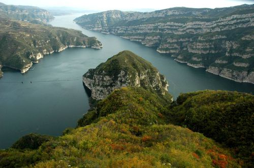

河南
简介
河南，古称中原，简称“豫”，因历史上大部分位于黄河以南，故名河南。河南位于中国中东部、黄河中下游。
截至2017年底，河南共下辖17个地级市、1个省直辖县级行政单位、52个市辖区、20个县级市、85个县，省会郑州市，常住人口9559.13万人。
河南是中华民族与华夏文明的发源地。从夏朝至宋朝，河南一直是中国政治、经济、文化和交通中心，先后有20多个朝代建都或迁都河南，中国八大古都中河南有洛阳、开封、安阳、郑州四个，是中国建都朝代最多、建都历史最长、古都数量最多的省份。
河南是中国重要的经济大省，2017年国内生产总值稳居中国第5位、中西部首位。
郑州商品交易所是中国首家内陆唯一一家期货交易所。 郑州航空港区为中国唯一一个国家级航空港经济实验区。 中国（河南）自由贸易试验区为中国新设立的自贸区。 2016年12月，国家批复郑州入选国家中心城市。 以河南为主体的中原城市群为中国经济第四增长极。
河南文物古迹众多，旅游资源丰富。 现有世界文化遗产6项25处，国家AAAAA级旅游景区13处。
原始时期
4500万年前，人类远祖起源地锁定在河南渑池上河曙猿化石遗址。
50万年前，南召猿人就已经在河南繁衍和生息。
8-10万年前，许昌人已经能很好的利用石器，并留下了灵井遗址。
1.5万年前，河南先人们制作服装用的牙制纽扣、针和染色用的赭石颜料等服饰文物古迹为全国发现同类最早的遗迹。
1-3万年前，旧石器晚期的河南远古人就已经会发明火、使用火和管理火，并在河南杏花山遗址留下了全国最早的洞穴遗址群落。
旧石器时代的小南海文化和中石器时代的灵井文化，河南出土了先人们用锤击法和砸击法制成的有尖状器及刮削器洞穴堆积群落，出土了哺乳动物化石、鸵鸟化石、石器、装饰品等文物。
新石器时代早期的贾湖文化、裴李岗文化，新石器时代中期的仰韶文化和新石器时代晚期的河南龙山文化使河南形成了发达的原始农业、畜牧业和制陶业等手工业，其中漯河舞阳张王庄遗址出土了中国最早的笛器、最早的家养猪、最早的水井。
